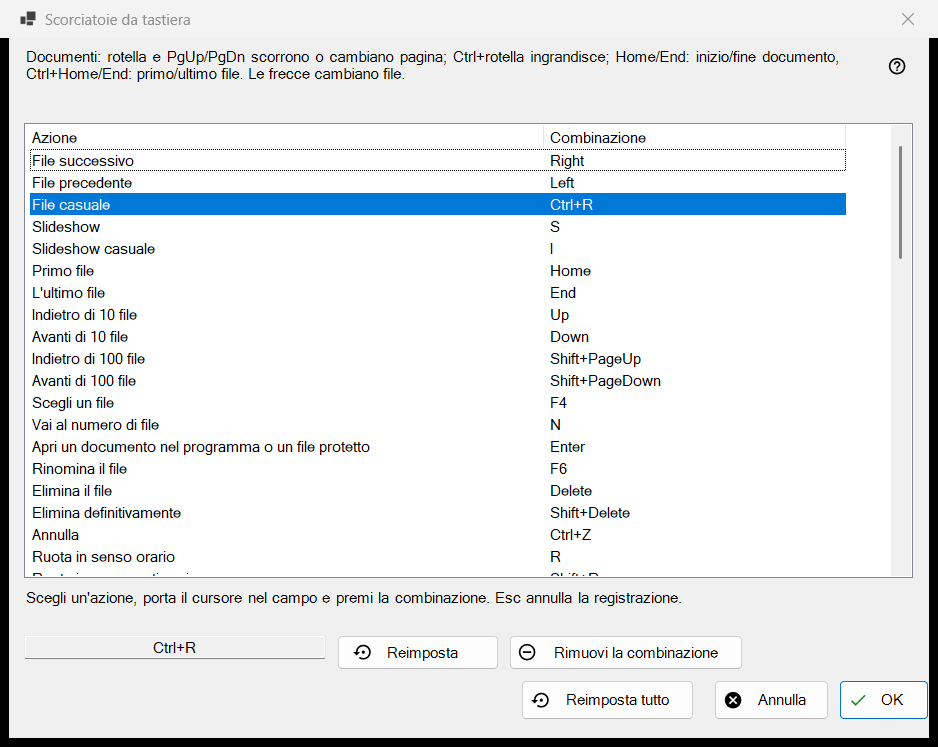
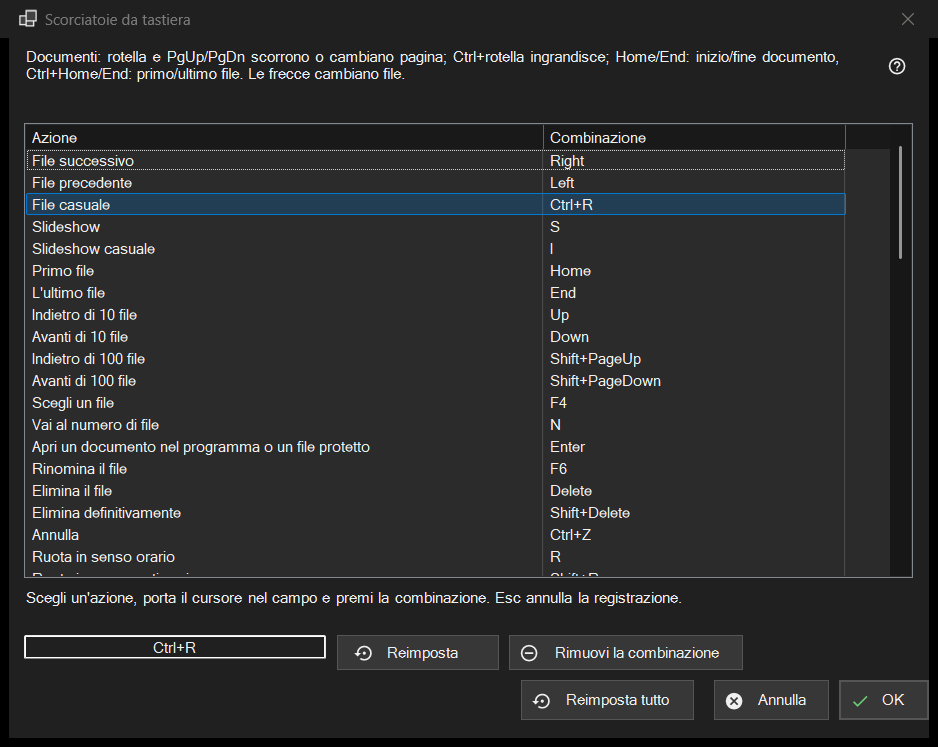

Scorciatoie da tastiera
Scopo
L'elenco di tutte le azioni del visualizzatore di cui puoi cambiare il tasto, con la combinazione a cui rispondono ora. Si apre da Impostazioni, pagina File e sistema, con il pulsante Configura.. nella riga Scorciatoie da tastiera. La finestra modifica una copia: nulla arriva al tuo profilo finché non premi OK.


In questo ordine
- Apri le Impostazioni, vai a File e sistema e premi Configura.. nella riga Scorciatoie da tastiera.
- Seleziona un'azione nell'elenco.
- Fai clic nel campo sotto l'elenco e premi la nuova combinazione.
- Se appartiene già a un'altra azione, scegli Scambia le scorciatoie, Rimuovi da quell'azione oppure Annulla.
- Ripeti per le altre azioni; usa Reimposta, Rimuovi la combinazione o Reimposta tutto quando serve.
- Premi OK per mantenere le modifiche, oppure Annulla per scartarle tutte.
Gli elementi
L'elenco Azione e Combinazione
Ogni riga è un'azione con la sua combinazione principale; un'azione senza tasto mostra Non assegnata. I dieci posti cartella compaiono come Sposta nella cartella 1..0 e Copia nella cartella 1..0 (i tasti numerici spostano, Shift più una cifra della riga superiore copia). Alcune azioni rispondono anche a tasti aggiuntivi di fabbrica (File successivo reagisce anche a barra spaziatrice e PageDown). L'elenco mostra solo quella principale, ma appena dai all'azione una nuova combinazione, tutti i suoi vecchi tasti di fabbrica smettono di funzionare. Il testo sopra l'elenco indica i tasti fissi per i documenti (rotella, PgUp/PgDn, Home/End, frecce) che non sono nell'elenco.
Registrare una combinazione
Seleziona una riga, poi fai clic nel campo sotto l'elenco (oppure fai doppio clic sulla riga) e premi i tasti, con Ctrl, Shift o Alt se vuoi. Il campo registra l'intera combinazione in una volta, e un modificatore da solo non è una combinazione. Esc esce dal campo senza registrare nulla. La modifica compare subito nell'elenco, ma è ancora solo nella copia di lavoro.
Tasti che non si possono assegnare
F1, F10, F11, Esc, i tasti Windows, il tasto Menu, Alt+Tab, Alt+F4 e Ctrl+Alt+Delete appartengono a Windows o al programma. Premendone uno compare: Questa combinazione è riservata dal sistema o dal programma e non può essere assegnata. Non cambia nulla.
Una combinazione già occupata
La domanda indica il proprietario: La combinazione X appartiene già a quell'altra azione. Scambia le scorciatoie dà a quell'azione la combinazione che aveva quella corrente (eventualmente nessuna). Rimuovi da quell'azione la lascia con Non assegnata e ti dà la combinazione. Annulla non cambia nulla.
Reimposta, Rimuovi la combinazione e Reimposta tutto
Reimposta riporta l'azione selezionata al suo tasto di fabbrica. Rimuovi la combinazione lascia l'azione senza alcun tasto, quindi anche il suo tasto di fabbrica smette di funzionare; usalo per disattivare un tasto. Reimposta tutto chiede: Reimpostare tutte le combinazioni ai valori predefiniti? Ripristina predefiniti cancella tutte le tue modifiche nella finestra; Annulla le mantiene.
OK e Annulla
OK salva l'intera mappa nel profilo e il visualizzatore la usa subito. Annulla chiude la finestra e lascia il profilo esattamente com'era. I tasti per video e audio (pausa, muto, volume, ricerca, velocità, fotogramma per fotogramma, tracce) agiscono sul contenuto in riproduzione.